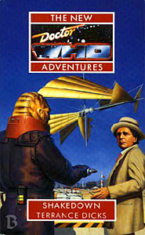

|
Shakedown
|
BASIC PLOT DOCTOR COMPANIONS MATERIALISATION CIRCUIT Pg 62 Ruta III, on an Ice Floe Pg 109 The Doctor arrives on Space Station Alpha, foolishly leaving the TARDIS in a storage bay. By Pg 232, the TARDIS is on the Tiger Moth, but whether it materialized there or was just moved is unclear. PREPARATORY READING CONTINUITY REFERENCES Pg 5 "The Sontarans. Best summed up by the philosopher Hobbes' description of the Life of Man - nasty, brutish and short." The Time Warrior and The Sontaran Experiment show them as short. They are a little taller by The Invasion of Time and positively massive by The Two Doctors. They also appear in Lords of the Storm. Rutans have appeared in Horror of Fang Rock and Lords of the Storm. Pg 7 "A flag, presumably that of the Sontaran Empire, was draped over the rear wall, flanked by two Sontaran troopers." We saw the Sontaran flag in The Time Warrior. Pg 10 "'The accused, who gives his name as Smith...'" The Doctor has often gone by the pseudonym of Doctor John Smith, beginning with The Wheel in Space and going onwards from then. Pg 13 "'I thought you said they [the Jekkari] didn't like to kill.' 'They don't. But they can do it now, if they must. It's something I had to teach them.'" Not unlike the Doctor and Ian's actions in The Daleks. Pg 14 "If it wasn't for that he might still be Lord President of Gallifrey." The Doctor became Lord President in The Invasion of Time, resigned, was given the post again in The Five Doctors, and had been deposed by The Trial of a Time Lord. The position was briefly offered him again in Blood Harvest. Pg 17 "[Roz] was used to corruption. It had caused her to quit her job with the Adjudication Service." In Original Sin. Pg 19 "'I'll bring you some materra,' cooed the waitress seductively. 'Specially imported from Rigel IV. They say it has aphrodisiac properties.'" When the Doctor and Peri went to Rigel IV, at the beginning of Players, they spent much of their time in a sewer. Which I imagine did not have aphrodisiac properties. Rigel IV also pops up in the audio The Shadow of the Scourge. Pg 20 "They had spent several days checking the mean streets of Megacity." Hey, I've just had a really good idea for a book title... Pg 21 "Chris gave her a baffled look. 'She said she was sorry if she'd got the wrong idea, and would I like to meet her brother.'" It's not the first time that it's been assumed Chris is gay, and it won't be the last. It's quite important to the plot of Damaged Goods, for example. "'You spent a fortune trying to look like that.'" Chris spent most of his first appearance, Original Sin, body-beppled into the shape of a giant teddy bear. Pg 23 "I broke my hand on an Androgum's chin." They appeared in The Two Doctors. "Chris stopped the next [cab] by the simple expedient of stepping in front of it, arms outspread, so it had to stop or run him down. The rodent driver, who looked like a giant rat in a leather jerkin, decided to stop." This is practically how Gonzo stops a cab in The Great Muppet Caper. The rat driving is surely, then, not a coincidence. "You want vraxoin, crackerjack, jekkarta weed?" Vraxoin was a highly dangerous drug which made its presence felt in Nightmare of Eden. The other drugs are new, although jekkarta will go on to be mentioned in Catastrophea. And no one offered Kermit drugs in the Great Muppet Caper. Pg 24 "The driver-rat demanded triple fare, and pulled a vibroknife when Chris refused." OK, this never happened in The Great Muppet Caper either. A vibroknife was a murder weapon in Lucifer Rising and The Infinity Doctors. Pg 25 "The description matched the mutilated body they'd seen on Lorelei." It's unlikely, but the ship traveled upon by Bernice in Dry Pilgramage may have come from this planet, as it called the Lady of Lorelei. Pg 30 "'Law and order? In Megacity?' snarled Roz. 'Don't make me laugh. The Chief of Police is probably a Dalek.'" You know where they came from. Pg 32 "The scrap of old legal jargon from some long ago course in the Adjudicator's Academy." Roz's training, all those years ago, mentioned in Original Sin. "'I don't give a Drashig's fart about the charge,' he roared." What a pleasant turn of phrase. The Drashigs appear in Carnival of Monsters, and Goth Opera, through neither the Doctor, Jo nor Romana comment particularly on their flatulence. Pg 33 "She remembered asking the Doctor if they drew a salary." Original Sin. Pg 38 "'There was one other candidate, a Martian Ice Warrior.'" The Ice Warriors etc. "'Justice by your side,' said Garshak. 'Fairness be your friend,' choruses Roz and Chris automatically. They looked at each other in consternation. Garshak smiled. 'Adjudicators, I thought so.'" This ritual greeting for the Adjudicators was established in Original Sin, and has been used oftentimes since. See also Continuity Cock-ups. Pg 40 "'You'll like Sentarion.' The Doctor had told her, sounding like a Gaztak trying to sell you a second-hand spaceship." Gaztaks appeared in Meglos. This is a fairly apt use of them. Pg 41 Benny is missing her Eridanean Brandy, which she drank in Deceit (pg 100) and Blood Harvest (pg 27). But see Continuity Cock-Ups. Pg 45 "'All right, Ace, all right,' she muttered out loud. 'Where are you and your portable armoury when I need you?'" Ace, Dragonfire to Lungbarrow (with a few exceptions). Right now, she's in France, many years ago. Her portable armoury appeared first in Deceit. Pg 47 "I thought this place was a haven of peace and scholarship. It's beginning to sound more like good old Chicago." Blood Harvest, although Bernice only turned up in Chicago right at the very end. Let's be charitable and assume that she got the full story from Ace and the Doctor. Pg 49 "Clad in the gorgeous scarlet robes of a Master of Arts from the University of Antares, Bernice followed Hapiir." Interestingly, the last time we saw Antares, the system was location for a massive Rutan/Sontaran battle in Lords of the Storm. The University must have survived. "Considering that [the robes] had been originally made for the Doctor." They're not the ones he wore as a schoolteacher in Human Nature, then. They're also the wrong colour for that. "Some day, vowed Bernice, she'd go to university, complete her studies and become a real professor not a fake one. Some day..." She begins doing this in Return of the Living Dad. See The Dying Days and everything that follows. Pg 55 "'I hope they haven't passed a Prohibition law,' said Bernice. 'I once visited a town where they tried that. It didn't work.'" Blood Harvest again. Pg 58 "He told Bernice how he'd never been appreciated, how his assistant at his home university plotted against him, and how the only girl he had ever loved had left him for a curly-haired space pilot on the Mars-Venus run. 'All teeth and curls he was'" The fourth Doctor, who had a license for this space journey in his pocket in Robot. Pg 62 "The light stopped flashing, the door opened, and something very like a Yeti in a battered hat emerged and stood shivering on the ice floe. Huddled inside his huge fur coat, the Doctor stood surveying the bleak beauty of the icescape." The Yeti first appeared in The Abominable Snowmen. The fur coat, worn then amongst other places, is presumably the second Doctor's. Pg 63 "You are not our friend, Doctor. You killed us, long ago, on a place called Fang Rock on a primitive planet called Earth." Horror of Fang Rock "There is a saying on Earth -"My enemy's enemy is my friend"" Whilst the Rutans do not mention the Doctor's help/hindrance in Lords of the Storm, this phrase was also important in that book. Pg 64 has the Doctor summarizing some of the events of Lords of the Storm, although they don't quite square with what actually happened. It is later revealed that the Time Lords gave the Doctor some information, so presumably he is blurring the issue so as not to mention their involvement. Or possibly the fact that he was not entirely helpful to the Rutans involved then. "We shall allow this to cancel out our death on Fang Rock." Horror of Fang Rock, unsurprisingly. Pg 91 "Even their involvement with the Doctor was documented, the attacks on Earth, the abortive invasion of Gallifrey." The Time Warrior, The Two Doctors and The Invasion of Gallifrey (The Sontaran Experiment hasn't happened yet). Pg 110 "I dispatched my first [Rutan], or rather my friend Leela did - purely in self-defence, mind you - with a rocket launcher stuffed with bits of old iron, a sort of improvised blunderbuss." Horror of Fang Rock. Leela, of course, was the Doctor's companion between The Face of Evil and The Invasion of Time and reappeared in Lungbarrow. Pg 113 "Well, it's a tricky thing materializing on a ship in flight, but I've done it before - usually when I didn't mean to" The Sensorites, The Ark, The Wheel in Space, Frontier in Space, The Hand of Fear, Four to Doomsday, amongst numerous others. Pg 116 "The Doctor was drumming on the table eyeing the ranks of Sontaran troopers, and cursing in very low Gallifreyan." He's cursed in this language before, in Blood Harvest, and it is presumably the opposite of Old High Gallifreyan, as seen and heard in The Five Doctors. Pg 138 "'You have two species on your planet?' 'She's a woman, Commander,' said Kurt evenly. 'A human female.' Stag moved on to Mari. 'This one too is female,' The broad three-digited hand touched her hair. 'The hair is finer... the thorax of different construction.'" Linx had similar difficulty spotting that Sarah Jane was a woman in The Time Warrior, and used similar observations to tell the difference in future. Pg 144 "'I met this weird hobo once,' he said vaguely. 'In... in a bar on Metebelis Three. Called himself The Alchemist, or the Dentist or something.'" He refers, naturally, to the Doctor, but is avoiding saying so as this was part of the video release which wasn't allowed to mention our favourite Time Lord. Metebelis Three appeared in The Green Death and Planet of the Spiders. Don't recall many bars there, though. Pg 148 "'Promises made to inferior species have no validity.'" The Cyberleader said this in The Five Doctors. He was equally doomed to die. Pg 151 "Lisa ran to a medical locker, extracted an instant hypo, knelt by Mari and touched it to her arm. Mari slumped back, instantly unconscious." Nice to know that the instant hypo does exactly what it says on the tin. Pgs 158 and 168. The Sontarans are now getting killed via the Probic Vent once every ten pages. They really need to do something about this. A scarf perhaps? Pg 180 has a brief summary of Lords of the Storm. "'Then I got a report from - from my own people. They drop me little titbits of information from time to time.'" That they do. The Doctor has been doing their bidding on a semi-regular basis since The Curse of Peladon. Pg 181 "'It's hard to see past the death of a friend,' he said. 'Believe me, I know, I've lost too many friends myself.'" The Doctor could be referring to Katarina (The Dalek Masterplan), Sara (The Dalek Masterplan) and Adric (Earthshock), or, in a wider sense to everyone around him who's died. I refer you to a line in The Left-Handed Hummingbird: "He remembers the morning he woke up and realised he had lost count of how many people he had seen die. He had promised himself he would not forget them, not one." (Pg 220) Pg 182 The space liner Hyperion is mentioned. Terror of the Vervoids (Trial of a Time Lord part 3) has the Hyperion III in it, but Cold Fusion makes it clear that there are many Hyperion vessels. Pg 184 The Hyperion is going to Sentarion, where Bernice is and where Karne II needs to go to fulfil his mission. Of course, there's no way he could have known that when he took over one of its crew. As Miss Piggy once said (The Great Muppet Caper again), 'What an unbelievable coincidence.' Pgs 189-190 "'I was brought up with an ideal of service. In time I learned that the system I served was hopelessly corrupt. But somehow the ideal stayed on. You could call it the Gallifreyan work ethic.'" A rather simplified view of the Doctor's departure from Gallifrey. Pg 190 "'This time is out of joint. Ah, cursed spite That ever I was born to set it right.' 'What's that?' 'Just something my pal Will knocked off, between pints at the Mermaid Tavern.'" Hamlet, Act 1, Scene V. The Doctor has mentioned meeting Shakespeare before, including Planet of Evil and City of Death. He does meet him in The Empire of Glass and sees him on the Time-space visualizer in The Chase. Pg 193 "The report of my death was greatly exaggerated." It's a Mark Twain mis-quote, and, while it gets 'report' right, which is normally changed to 'rumour', it still should end 'was an exaggeration.' Pg 196 The chapter title is 'Sanctuary,' title of another NA, and probably a coincidence. "Her requests for a bottle of Eridanean brandy had simply been ignored." Blood Harvest again. Pg 198 "In her pocket was a silver sphere with an inset button. It was called a SPATAB. A Spatio-Temporal Alarm Beacon." Bernice had a similar device with her in Blood Harvest, although it wasn't named then. Pg 202 "Some scientists had come up with the theory that the gods of these curiously common myths were in fact space traveling aliens, landing upon still primitive planets and accelerating the development of native species, possibly by genetic manipulation. The hypothesis had originated long ago on Old Earth, where it was sometimes known as the Von Daniken Myth, or the Quatermass theory, after the long-forgotten scholars who had originated it." In the Who universe, the Earth was, in fact, visited by aliens who altered their development including the Exxilons (Death to the Daleks), the Osirans (Pyramids of Mars and The Sands of Time) and Scaroth (City of Death), presumably amongst many others. The reference to Quatermass is relevant as implications from the dialogue of Remembrance of the Daleks ('I only wish Bernard were here') imply that Quatermass exists in the Who universe. Pg 207 The chapter title is Revelation, again an NA book title and, again, probably a coincidence. Pg 209 The use of the word 'Anabolic' in 'Anabolic coma' is scientifically accurate. Pg 225 "'When I say run, run'" The Second Doctor's catchphrase. Pg 233 "He wondered what had happened to mild, gentle, womanly women. Like Ace - and Leela." We presume that the Doctor is being sarcastic here. OLD FRIENDS AND OLD ENEMIES NEW FRIENDS AND NEW ENEMIES Sontarans: Admiral Sarg. In Megacity: Garshak, the Orgon chief of Police in Megacity, who would go on to reappear in Mean Streets. He's a great character, actually. Murkar also reappears in Mean Streets, as does the dancer Chris ogles on page 78 (later named as Sara). Also a rat taxi-driver.
CONTINUITY COCK-UPS PLUGGING THE HOLES [Fan-wank theorizing of how to fix continuity cock-ups] FEATURED ALIEN RACES The Sontarans and their old enemies the Rutans On Megacity, the police are Ogrons. More intelligent than your average one, though. The taxis are driven by rat-creatures. The Sentarions are big insects divided into three sects. The warrior group are known as the Harrubti. The barman on Space Station Alpha is a 4-armed Dravidean. Pg 21 "Roz saw Acturans, Alpha Centaurians, Falardi and Foamasi. There were also surprising numbers of a barrel-chested Ursine species resembling teddy-bears with attitude.'" Arcturans: The Curse of Peladon, Alpha Centaurians: The Curse of Peladon, The Monster of Peladon, Legacy et al., Falardi: allegedly responsible for Roz's former partner's death in Original Sin, Foamasi: The Leisure Hive, Placebo Effect. The bears are new, but would go on to feature in Mean Streets. FEATURED LOCATIONS Megacity, on Megerra (Bernice would later arrive here in Mean Streets). Sentarion, the University planet - the Spaceport, Sentarion City itself, and the Temple. Ruta III, home planet of the Rutans. Space Stations Alpha and Beta (Gamma and Delta are also mentioned) The Tiger Moth, a space racing yacht. IN SUMMARY - Anthony Wilson |
|
 |